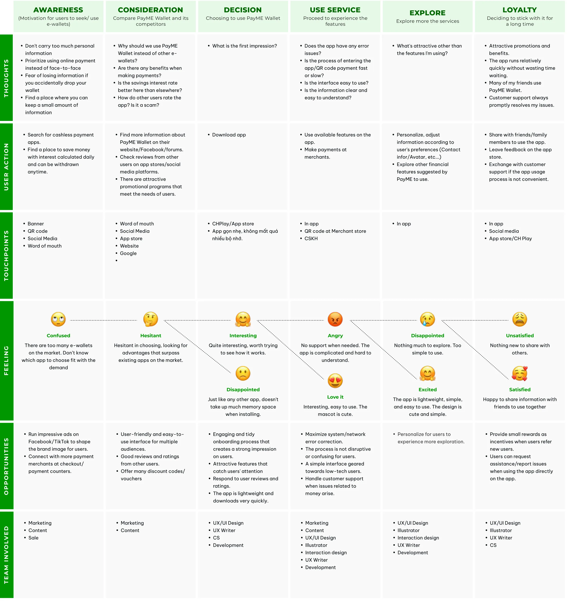
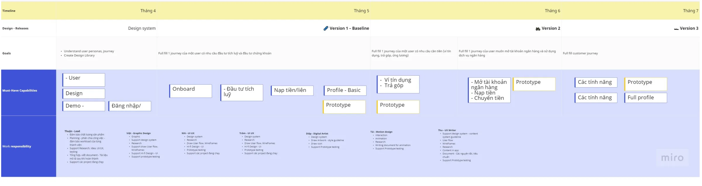
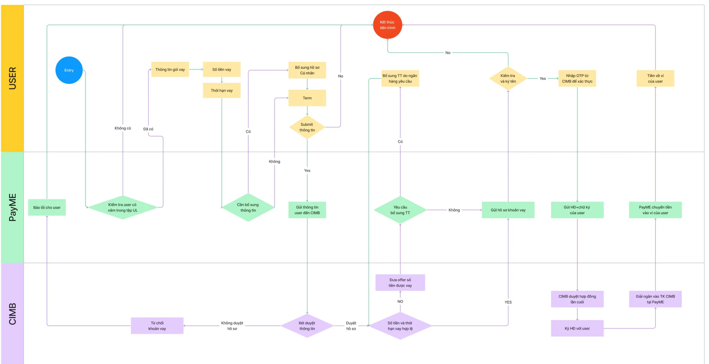
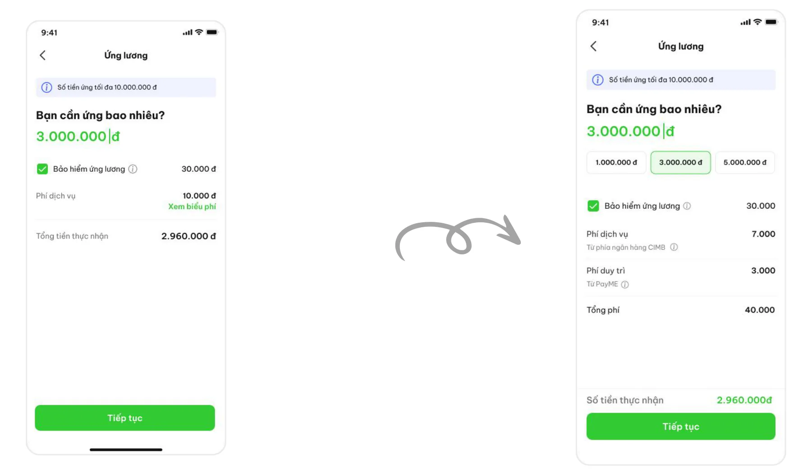
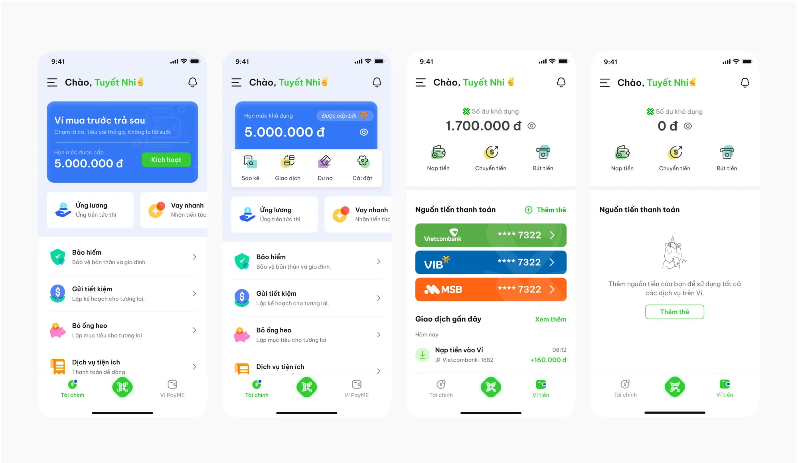

01Business
PayME wanted to do more than payments.
People used PayME to pay at stores, and that was it. The company saw a bigger chance: lending, savings and insurance, in the same app people already used.
From a payment wallet
- Pay at stores
- Bill payments
- Money transfer
- Top up
To a financial platform
- Payments
- Salary advance
- Savings
- Consumer loans
- Insurance
02Research
People wanted the services. Trust was the problem.
We talked to 10 active PayME users, aged 18 to 35. They liked the idea of loans and an earlier payday. What held them back was trust, a hard sign-up, and costs they couldn’t see.
- 10/10were afraid of losing money to an app or a scam
- 9/10found eKYC sign-up hard, with long waits
- 7/10ran out of salary by mid-month
“I’m a taxi driver with a low income. I want to get paid in advance every mid-month to cover my family’s living expenses.”
“I want to borrow less than 10 million VND to open a small business, but the bank’s procedures are complicated.”
See the full research and journey map
- 10/10 felt there were no promotions worth using.
- 9/10 wanted quick loans but feared complex steps and unclear interest.
- 9/10 found nothing else to explore in the app.
- 7/10 prefer installments for big purchases.
- 6/10 had trouble linking banks and wallets.

03Leadership
Giving six people a clear direction.
I turned the research and business goals into a design roadmap, agreed it with engineering, marketing and the bank, and ran the team against it. I also reviewed the team’s work, mentored junior designers and set up a shared workflow.

Priorities
Research and business goals in one roadmap.
Partner alignment
Worked with CIMB, engineering and marketing on scope.
Design reviews
Kept quality and patterns consistent across releases.
Mentoring
Coached junior designers and ran day-to-day delivery.
04System thinking
A simple request. Three parties behind it.
Salary advance looks like one tap for the user. Behind it, PayME and CIMB each have their own checks and rules. I mapped it as a swimlane so business, bank and engineering could agree on every handoff.
- Pick an amount
- Confirm
- Get the money
- Check eligibility
- Send to CIMB
- Show the status
- Review the request
- Approve
- Disburse
See the full swimlane

05Design decisions
Show the fee when people choose an amount.
We tested salary advance with 5 people who had never used PayME. They didn’t know how much to ask for, and they wanted to see the fee before moving on, not on a later screen.

- Didn’t know how much to ask forPreset amounts to compare.
- Wanted to see the fee firstFee shown next to the amount, updated live.
- Wanted to see past advancesA separate history screen, so the main flow stays short.
06Build for scale
We built the system as we shipped.
We didn’t stop to build a full design system first. We started from the existing app, refreshed the type and colours, and added components when a release needed them. That let one team design several services without redoing common patterns.

07Outcomes and learning
Shipping took longer than designing.
We shipped three products in a year. Some releases ran late, because engineering had to change parts of the build and agreeing rules with the bank took time.
New e-wallet
A clearer wallet for everyday payments.
PayME POS
PayME at offline stores.
Bank lending flows
Salary advance and loans with CIMB.
Next time, I’d bring engineering and the bank into flow decisions earlier.
A good design doesn’t help if the people building and approving it aren’t aligned. Earlier reviews would have saved us late changes.